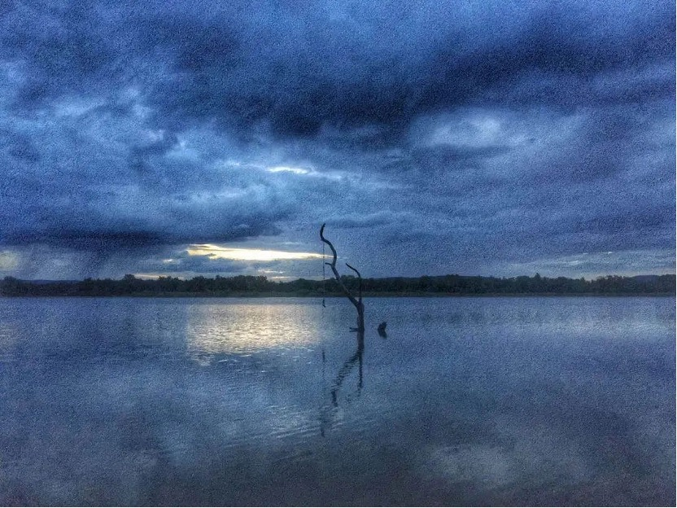
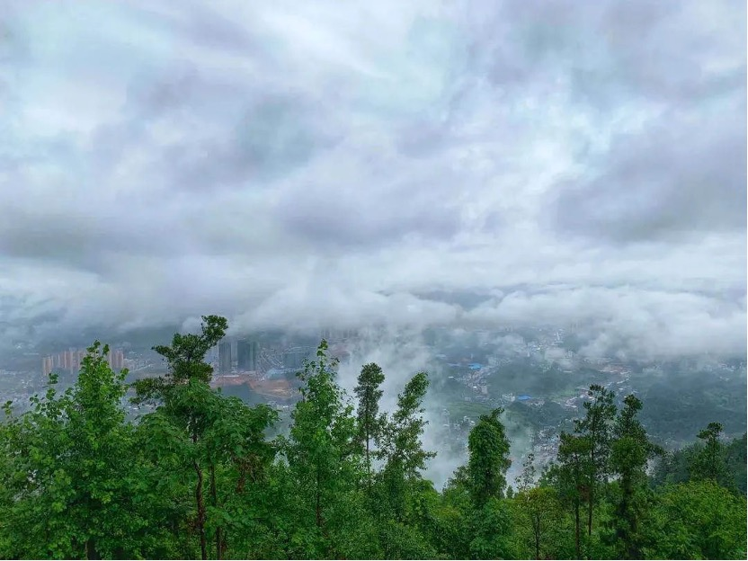
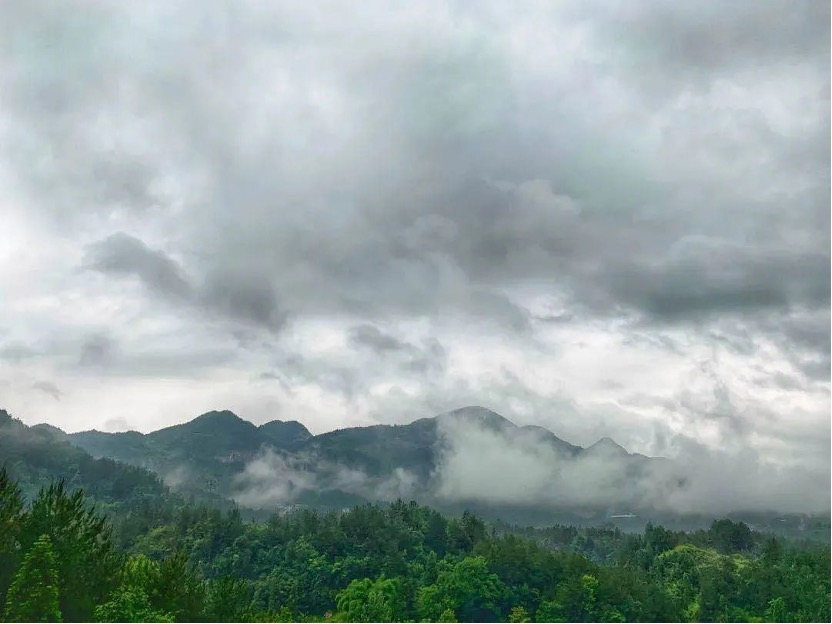

又是一个雨夜。 我独爱下雨天，尤其是夜晚。 小时候，父母总是工作到很晚才回家。每天晚上一个人在空荡荡的房间里面，总免不了胡思乱想。夜越是安静，恐惧便越是能将我吞噬。只有在雨夜，我听着窗外滴滴答答的声响，才能睡得更加安稳。 自那以后，我便爱上了雨夜，因为律动的雨声给我带来了极大的安全感。
我并不是一个喜爱热闹的人。或许我独自一人的时候，并未觉得有任何不适。但每次参加聚会，看着周围的人儿欢笑嬉闹，我总能感受到一种跻身于人群的孤独感。 而今夜，这样的孤独感在雨夜的衬托下油然而生。
由于身体不适，我早早便躺在自己房间了。在这一片淅淅沥沥的雨声中，我关上灯，拉开窗帘，让外面的光线透过纱窗照进我的房间。 墙壁上出现一面窗子的倒影，好似在房间开了另外一扇窗子一般。微弱的光线将雨点投射到这面窗子上，我看着这不停晃动的墙壁聆听着雨声。房间里还飘荡着几只急不可耐的蚊子，逮住时机便向我发起进攻，可我却没有心思和力气去理睬它们。 楼下人声鼎沸，我并没有参与到他们的聚会中，却仿佛置身其中。因为躺在这，能清晰地听到楼下各种吵闹声，开车门的哐当声，车辆驶过溅起的水声，孩子们追逐的嬉闹声，大人们聊天的欢笑声
雨声与这一片喧闹此起彼伏。随着人声越来越嘈杂，雨声也便渐渐平息了下来；而当人群散去，雨点又一下子冲到了前线，夺回自己的主场。 我不由得想起这句话“热闹是他们的，我什么都没有”。可我不是什么都没有，我有我自己，有我的内心世界，有属于我一个人的快乐。 而这集市中的每个人，也都有自己的生活，有属于自己的快乐，当然也有烦恼。 想起一位朋友跟我说的一句话：平凡的世界里平凡的你我，亦可歌可泣。